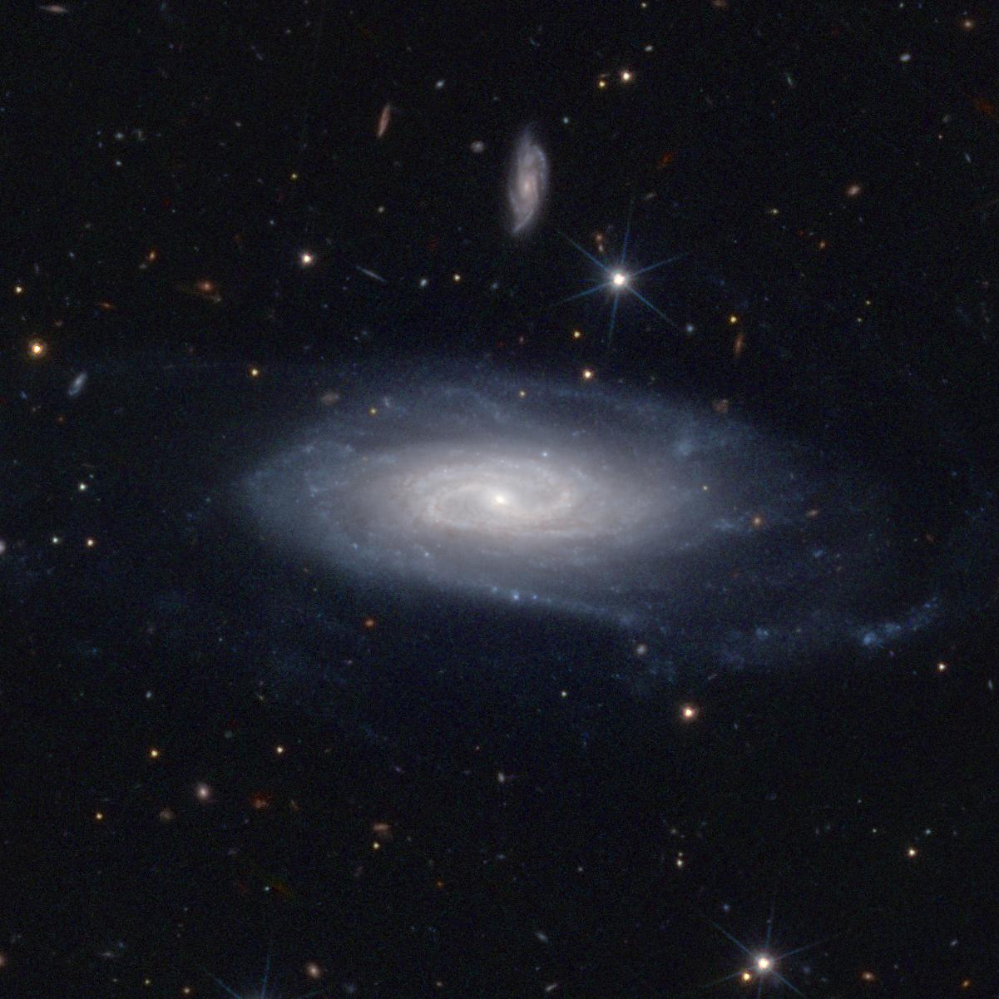
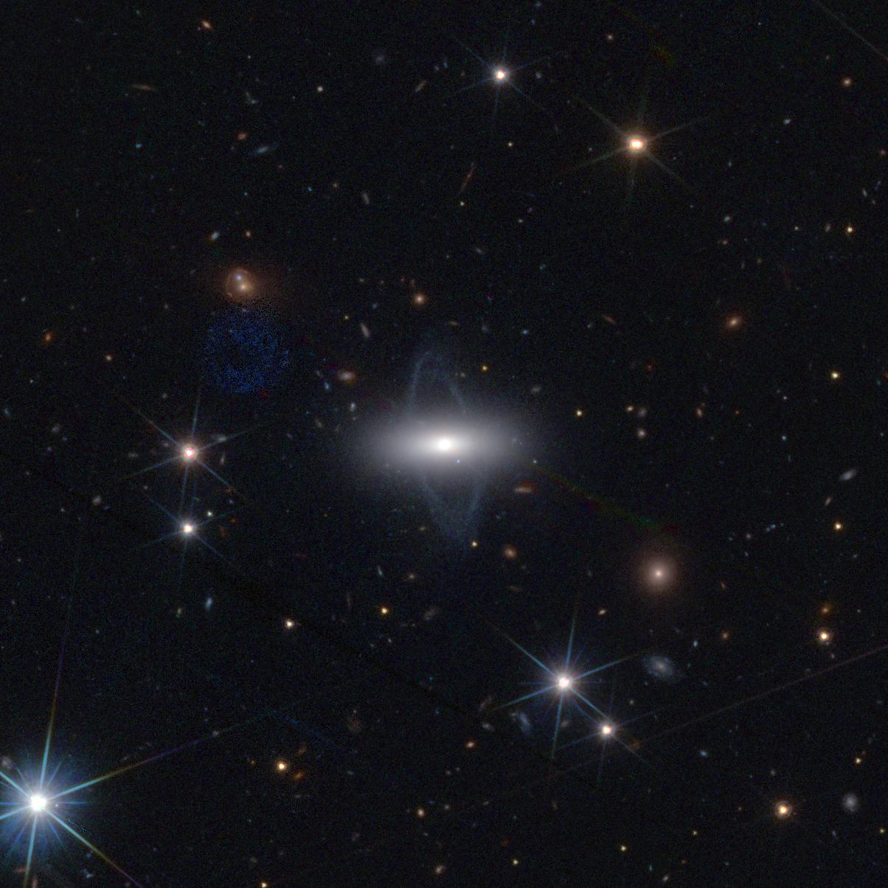
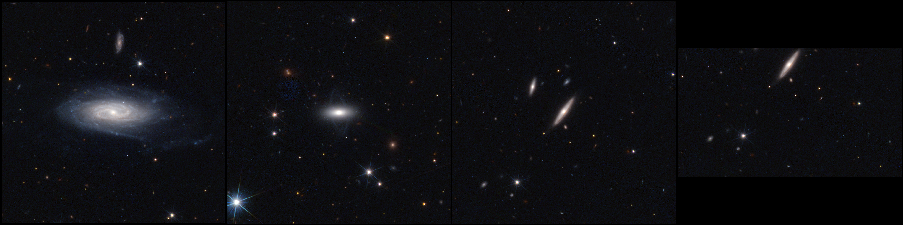

Pipelines
Introduction
Starting from version 2.0, when executed as part of a Unix or Windows pipeline,
Azulero commands can read their positional arguments from the standard input stream (stdin),
and write their results to the standard output stream (stdout).
Logs are written to the standard error stream (stderr).
Moreover, the commands now accept multiple inputs,
which make them suitable for batch processing.
The following sections demonstrate classical use cases.
Basic knowledge on pipelines and standard streams
– at least, knowing operator | – is required.
For the sake of simplicity (and sanity), we’ll illustrate the features for Bash on Unix systems only.
Translation to Windows is left as an exercise!
For a better understanding of what actually happens, the last section dissects the data flow of a simple pipeline.
The results will be presented for public Q1 data only; set the following environment variables in order to reproduce the images exactly (see Named options):
export AZULRETRIEVE_FROM=pdr
export AZULRETRIEVE_DSR=Q1_R1
Credit for all images and videos in this page:
ESA Euclid / Euclid Consortium / NASA / Q1-2025 / Antoine Basset (CNES).
Pipeline: Object names to color images
The simplest use case for an Azulero pipeline is to download MER data and render color images. In this example, we will use galaxy names as input:
azul retrieve UGC11116 PGC61356 -r 1m | azul process
Note that several MER tiles may contain a given target,
such that more than two images may be rendered.
If this is unwanted, set option -n 1.
Conversely, several targets may belong the same tile,
which is the case for those two galaxies in Q1 tile 102159776.
The above command will generate two images:


Color rendering of 2’ x 2’ cutouts around UGC11116 and PGC61356.
The resulting workspace contains two workdirs which share a common tile folder:
We have generated the color images one after the other by executing a single azul process command,
but it is possible to parallelize the pipeline, for example with xargs:
azul retrieve UGC11116 PGC61356 -r 1m \
| xargs -n 1 -P 4 azul process
where -n 1 is the number of targets passed to each azul process command,
and -P 4 is the maximum number of parallel executions.
Similarly, the retrieval can be parallelized:
echo UGC11116 PGC61356 \
| xargs -n 1 -P 4 azul retrieve -r 1m \
| xargs -n 1 -P 4 azul process
Pipeline: Online catalog to collage
Let us run Azulero on the lens catalog which was used to render the Q1 strong lensing collage and generate a similar output in one pipeline:
wget -q -O - https://zenodo.org/records/15025832/files/q1_discovery_engine_lens_catalog.csv \
| tail -n+2 \
| sort -r -t ',' -k 8 \
| head -112 \
| cut -d ',' -f 5,6 \
| azul retrieve -n 1 -r 5s \
| azul process \
| azul arrange -n 14 \
| xargs open
The above pipeline performs the following:
download the catalog into
stdout,remove the header row,
sort rows by descending flux,
keep 14 x 8 = 112 targets,
select RA and Dec columns,
retrieve one 10” x 10” cutout per target,
render a color image per cutout,
arrange renderings into a 14-column grid,
display the resulting collage:

Collage of 10” x 10” cutouts around Q1 strong lenses.
Pipeline: Clipboard to slideshow
This example is a bit more exotic than the others, but parts of it may come in handy.
We will get the list of targets from the clipboard and generate a video from the renderings.
To this end, we will rely on ImageMagick’s convert, which can turn a sequence of images into a video as follows:
convert -delay <duration> <images> <video>
where:
<duration>is the duration of each image in centiseconds,<images>is the space-separated list of input images,<video>is the path to the output video.
As targets, we will use Q1 nearby galaxies. The pipeline will be fed by the clipboard, therefore we will just select the table at the bottom of this page and run:
xclip -o \
| sed 's/ //g' \
| azul retrieve -n 1 -r 30s \
| azul process \
| cat - <(echo " slideshow.mp4") \
| xargs convert -delay 50
where:
xclip(which you may need to install) prints the selection tostdout;sedremoves spurious spaces, e.g.PGC 2693358is transformed intoPGC2693358;azul retrievedownloads 1’ x 1’ cutouts;azul processrenders the images and returns the paths;catappends the output video filename to the rendering paths forconvert;convertgenerates the video:
Slideshow of 1' x 1' cutouts of Euclid Q1 nearby galaxies.
Dissecting a pipeline
Let us introduce a simple and typical example pipeline:
echo UGC11116 PGC61356 LEDA2697349 \
| azul retrieve -r 1m \
| azul process \
| azul arrange --format max \
| xargs open
which gives:

Collage of 2’ x 2’ cutouts around UGC11116, PGC61356 and LEDA2697349.
Since we did not pass option -n 1 to azul retrieve,
all of the tiles which contain a target are retrieved,
which is why there are two images of LEDA2697349.
One of them is incomplete because the whole 2’ x 2’ cutout doesn’t fit inside the second tile.
With option -n, the tiles would have been sorted by coverage in order to retrieve complete cutouts in priority.
Finally, azul arrange’s option --format max is used to pad the smallest cutout instead of cropping the largest ones.
The message flow is illustrated below:
echostreams the targets towardazul retrieve.azul retrievestreams the workdirs towardazul process.azul processstreams the paths to the renderings towardazul arrange.azul arrangestreams the path to the collage file towardopen.